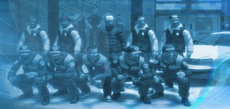

The goal of the LCES-26 project is to finally regroup members of the original Xbox 360 LCES clan — established in 2008, almost two decades ago — for a patrol in good old Liberty City.

LCES (Liberty City Emergency Services) is an Xbox 360 Grand Theft Auto IV online clan. Our games consist of realistic crime chases. Our motto is “to serve and protect” — and that’s what we do.
We play our games on the team deathmatch mode. On that mode, we limit the weapons to weaker weapons and have a team of cops and crooks. There are usually more cops than crooks. Proximity chat is selected and an island is chosen as the “arena”.
In the beginning of the game, the crooks chill until the cops get their police cars. Once the cops get their police cars, they patrol the area and obey all traffic laws. If they see a crime committed by the crook or get a tip from an “anonymous” caller, they respond with their sirens and use the proper radio communication.
At the area, they try to arrest the crook and take him to the jail for around 2–5 minutes — or if a firefight escalates, the cops will return fire. Basically, anything can happen that’s realistic — there are even sometimes crooked cops.
We are all in our thirties, forties now. The dust has settled, the teenage drama is long dead, and enough time has passed to say the itch to patrol Liberty City again never went away. Sure, there are massive, hyper-realistic RP servers and heavy LE mods for GTA V now, but the way we made it work back then with nothing but proximity chat and our imaginations was something unique and special.
It's simple: we’ll patrol on GTA IV. This is the formula that worked for years, and because the game is so old now it’s completely accessible to everyone. It runs on modern PCs without needing expensive hardware upgrades and also continues to work flawlessly on Xbox 360 and newer Xboxes.
What about it? GTA V has held the franchise hostage for over a decade and most of us checked out. But with GTA back in the spotlight, and V finally behind us, we can finally look at IV through a nostalgic and appreciative lens. We'll return to the streets where we started, and if we’re lucky VI might lend itself to patrols better than V ever did. This could be the staging ground for a brand-new era of LCES.
Drop your info below. The streets of Liberty City don’t patrol themselves.